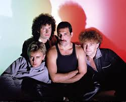
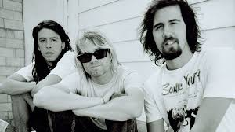
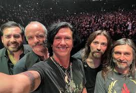
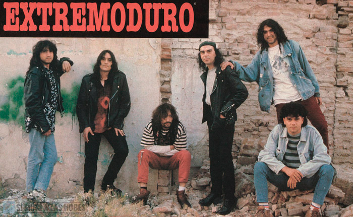
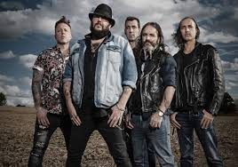

What is Rock Music?
Rock music is a genre that originated in the 1950s and evolved from earlier styles like blues and rhythm & blues. Known for its strong backbeat, electric guitars, and rebellious spirit, rock became a powerful cultural force, inspiring countless subgenres—from hard rock and punk to alternative and grunge. Rock emphasizes raw emotion, energetic instrumentation, and often explores themes of resistance, love, and identity. Let’s explore the genre across three key regions: English-language rock, Latin American rock, and Spanish rock.
Rock in English
Queen

An iconic British band known for theatrical performances, genre fusion, and Freddie Mercury’s legendary vocals. Some of the most listened albumss:
- A Night at the Opera (“Bohemian Rhapsody”)
- News of the World (“We Will Rock You”, “We Are the Champions”)
- The Game (“Another One Bites the Dust”)
The Beatles

Often considered the most influential band in rock history, The Beatles revolutionized popular music with their innovation and songwriting.
- Sgt. Pepper’s Lonely Hearts Club Band (“Lucy in the Sky with Diamonds”)
- Abbey Road (“Come Together”, “Here Comes the Sun”)
- The White Album (“While My Guitar Gently Weeps”)
Nirvana

Leaders of the 1990s grunge movement, Nirvana brought raw emotional intensity and distorted guitar riffs to the forefront of rock. There albums include:
- Nevermind (“Smells Like Teen Spirit”, “Come As You Are”)
- In Utero (“Heart-Shaped Box”)
- MTV Unplugged in New York (acoustic performances of “About a Girl” and “The Man Who Sold the World”)
Latin Rock
Soda Stereo

Arguably the most influential Latin rock band, Soda Stereo pioneered the rock en español movement across Latin America.
- Signos (“Persiana Americana”)
- Doble Vida (“En la Ciudad de la Furia”)
- Canción Animal (“De Música Ligera”)
Charly García

One of the most important figures in Argentine rock, Charly García is known for his poetic lyrics, musical experimentation, and cultural impact. Top Albums & Songs:
- Clics Modernos (“Nos Siguen Pegando Abajo”)
- Piano Bar (“Demoliendo Hoteles”)
- Parte de la Religión (“Rezo por Vos”)
Caifanes

Blending gothic, new wave, and traditional Mexican elements, Caifanes became a cornerstone of Latin rock in the '90s.
- Caifanes (“La Negra Tomasa”)
- El Silencio (“Afuera”, “Nubes”)
- El Nervio del Volcán (“Afuera”)
Rock in Spanish
Héroes del Silencio

A legendary rock band known for poetic, philosophical lyrics and a dramatic, anthemic rock sound.
- Senderos de Traición (“Entre Dos Tierras”)
- Avalancha (“Iberia Sumergida”)
- El Espíritu del Vino (“La Herida”)
Extremoduro

Leaders of Spain’s "rock urbano," known for raw lyrics, rebellious spirit, and emotional intensity.
- Agila (“So Payaso”)
- Yo, minoría absoluta (“La vereda de la puerta de atrás”, “Stand By”)
- La Ley Innata (“Dulce Introducción al Caos”)
Marea

A band from Navarra known for poetic, gritty lyrics and a fusion of hard rock with Spanish folk roots.
- Revolcón (“Corazón de Mimbre”)
- Besos de perro (“La luna me sabe a poco”)
- 28.000 Puñaladas (“Que se Joda el Viento”)